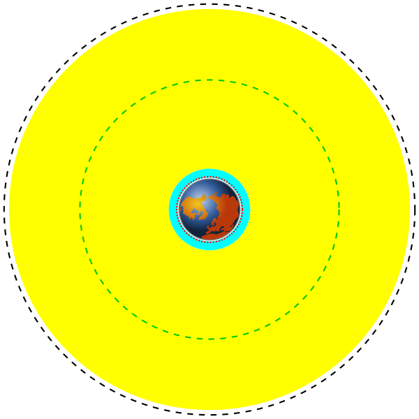
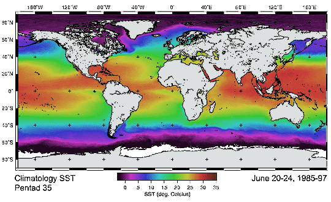
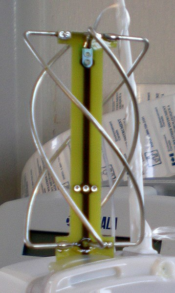
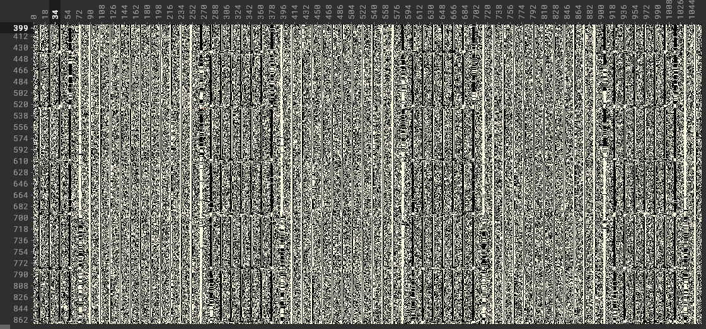

Zielsetzung
- Wetterdaten von Satelliten aus der Erdumlaufbahn zu empfangen
- Optimierung der Demodulierung und Decodierung der empfangenen Daten
- mit Hilfe der Daten aktuelle Wetterphänomene aufzeichnen

Grundlagen
Umlaufbahnen
Low Earth Orbit
Medium Earth orbit
Geostationärer Orbit
Instrumente
- Advanced very-high-resolution radiometer
- sichbarer Bereich und Infrarot (Temperaturmessung möglich)
- starke Aussendung
- der Übetragungsart angepasste Auflösung

Datenübetragung
automatic picture transmition
low rate picture transmition
hight rate picture transmition

Antennenbau

Antennenarten
- V-Dipol Antenne
- QFH Antenne

V-Dipol Antenne
- 120° zwischen den Elementen
- Länge eines Elementes ist 50cm (zusammen 2m)
- im 2m Band resonant (FM Radio, Flugfunk)

Empfang und Dekodierung
"software defined radio"
- Signalverarbeitung über den Computer
- hilfreich bei großen Bandbreiten und komplexen Signalen
- kostengünstiger durch standartisierte Teile



Zukunft
L-Band
- großere Bandbreiten möglich
- bessere Bildqualität
- braucht eine Satellitenschüssel
- sehr feine Anpassungen nötig
Danksagung
- Ullrich Müller